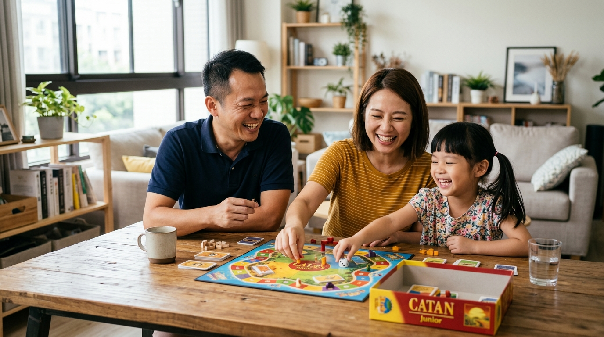

開場破冰：叫孩子停止玩手機時...
📊 現場即時動態文字雲（Firebase 連線中）：
LIVE今天最重要的核心方向
🎭
「每天晚上，
孩子都在演同一齣戲。」
❌ 我們今天不討論：
今天不是來討論怎麼贏這場吵架。
⭕ 我們想一起討論的是：
如何不用天天吵架，也能讓孩子願意放下手機。
Part 1：問題共鳴 —— 為什麼孩子離不開？
🎰
吃角子老虎機機制
社交與遊戲專門設計「不確定性賞賜」，每次刷新都像拉霸，持續給予多巴胺衝擊。
🎮
尋求現實缺乏的掌控感
現實生活全由大人決定，但在遊戲與手機裡，孩子才能獲得主導權與選擇權。
📱
Alpha 世代的意義感
現實生活中缺乏即時成就感與歸屬感，孩子自然全盤轉向網路與社群尋求。
Part 2：原因解析 —— 3 大心理需求
🏆 1. 成就感
遊戲即時升級與得分獲取肯定 vs. 課業漫長累積與挫折感。
🤝 2. 歸屬感
線上社群與同學組隊陪伴 vs. 家長忙碌且孤單的家庭時間。
🛡️ 3. 逃避壓力
逃避父母緊張張力、學習障礙與學校人際關係壓力。
🔍 鏡像效應：家長是否也常看手機？孩子是在模仿我們，還是在躲避我們？
Part 3：實用方法 —— 3 大具體工具
1. 定規則，不是定命令
一起訂定「3C家庭公約」，寫下來、貼出來，全家共同遵守（包含爸媽自己）。
2. 取代，不是禁止
用高品質陪伴（桌遊、戶外活動）取代手機帶來的感覺，而非用冰冷命令取代。
3. 先連結，再糾正
先處理情緒與同理當下體驗，再給予有彈性的選擇權而非硬命令。
實戰示範：溝通句型對比
❌ 傳統命令句（引發對立）
- 「不要再滑了，立刻給我關掉！」
- 「我數到三，一...二...聽到沒有！」
- 「別人是別人，我們家是我們家！」
VS
⭕ 先連結再糾正（同理＋給選擇）
- 「我知道你正玩到關鍵的地方...」
- 「需要再 5 分鐘，還是我先幫你留飯？」
- 「聽起來你很想跟同學有共同話題...」
Part 4：心態轉換 ＋ 信仰亮光
焦點轉換：
「手機只是症狀，真正的問題往往是：孩子覺得自己被聽見、被愛了嗎？」
「愛不是控制，是陪伴；
設界線不是處罰，是保護。」

願景：與孩子站在同一邊
🌱
上帝託付的禮物
父母是孩子生命的管家。面對網路時代誘惑，我們應該與孩子聯手作戰，而非互為對手。
🤝
溫暖的教會社群
同儕夥伴與大哥哥大姊姊輔導陪伴，讓孩子不再單獨孤單黏在網路世界。
Q&A 現場交流（混合式）
⏱️ 前 10 分鐘：講師集中解惑
• 回應「匿名提問紙條/提問箱」關鍵問題
• 示範常見熱門題（如：同學都有手機怎麼辦？吵到摔門如何修復關係？）
• 示範常見熱門題（如：同學都有手機怎麼辦？吵到摔門如何修復關係？）
💬 後 15 分鐘：鄰座就地交流
• 與鄰座 2–3 位家長分享彼此經驗
• 交流「我家試過最有效的一件事」
• 志工現場關懷與協助帶動
• 交流「我家試過最有效的一件事」
• 志工現場關懷與協助帶動